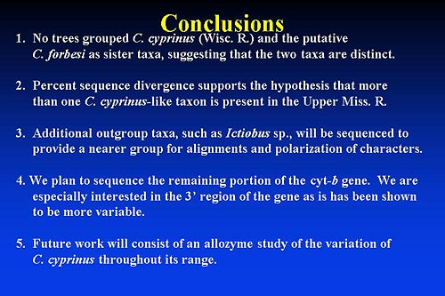

|

- No trees grouped C. cyprinus (Wisconsin R.) and the putative C. forbesi as sister taxa, suggesting that the two taxa are distinct.
- Percent sequence divergence supports the hypothesis that more than one C. cyprinus-like taxon is present in the upper Mississippi R.
- Additional outgroup taxa, such as Ictiobus sp., will be sequenced to provide a nearer outgroup for alignments and polarization of character.
- We plan to sequence the remaining portion of the cyt-b gene. We are especially interested in the 3' region of the gene, as it has been shown to be more variable.
- Future work will consist of an allozyme study ofthe variation of C. cyprinus throughout its range.
Prev Slide | Next Slide
|

Summary
Introduction
Carpiodes
Ictiobus
Distribution
Field Work
External Morphology
Morphometrics
Allozymes & Isozymes
mtDNA Sequencing
Literature Cited
Publications & Presentations
|